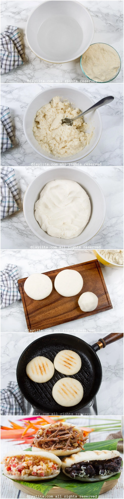

Espalhe o óleo em uma frigideira grande e coloque-a no fogão em fogo médio-alto.
Coloque a água e uma pitada de sal em uma tigela; Acrescente a farinha aos poucos e mexa com uma colher.
Aguarde cerca de três minutos até que a massa adquira um pouco de consistência. Em seguida, amasse
vigorosamente até que não grude nas bordas do recipiente. Não deve haver grumos.
Forme esferas do tamanho de uma laranja e depois esmague-as com as palmas das mãos até obter arepas
circulares com cerca de dez centímetros de diâmetro.
Colóquelas en el sartén y cocine con tapa por unos 5 minutos; destape y de vuelta a las arepas. Si desea
las arepas muy crujientes puede introducir en el horno unos 10 minutos a fuego medio 180 °C. Las arepas
se abombarán ligeramente y si las golpea suavemente, producirán un sonido hueco.

Para o recheio:
Em uma frigideira em fogo médio alto, coloque o azeite e refogue a cebola, em seguida acrescente o
tomate e mexa por mais cinco minutos. Adicione uma pitada de sal e os ovos batidos.
Cozinhe tampado por três minutos e depois mexa, retirando o periquito das bordas. Tire o calor.
Abra as arepas com uma faca afiada na lateral e recheie uma com feijão, outra com carne desfiada e por
último os ovos de perico.